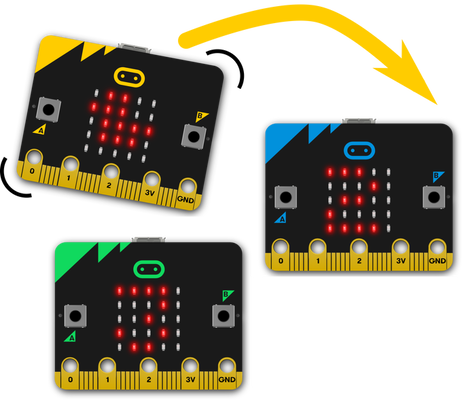

Code Club Links - micro:bit
Get Started
The first project that we're going to make is a simple dice, so let's create a new project named My Dice and follow the tutorial to create it. Follow these steps:
- Click here to open the micro:bit code editor. Keep this page open too so you can see these instructions.
- In the code editor click on the New Project button to start a new project.
- Type "My Dice" for the project name.
- Click on the green "Create" button.
- You'll see the micro:bit code editor. This is very like Scratch - you can add new blocks by finding them in the blocks menu (where it says Basic, Input and so on) and get rid of blocks by dragging them out of the code area onto the blocks menu again.
- Click on the "Simple Dice Roller" link to open a new browser tab with instructions on programming a dice roller. There are two short videos to watch too if you want. Follow those instructions then come back here to find out how to get your program onto the micro:bit.
- Once your program is working on the simulator, you can load it onto your micro:bit.
- Plug your micro:bit into the USB socket if you haven't already.
- Click the purple "Download" button.
- If pairing instructions appear, follow them. This should only happen the first time you download to the micro:bit.
- Wait until the download finishes, then try using your program on the micro:bit.
- Repeat these steps for the other 'First Projects' listed below, then try any others that you want if you have time.

If you're interested in Python programming, you can click the down arrow beside "JavaScript" at the top of the code editor window and select "Python" to see the Python code that would do the same as your blocks program. Click "Blocks" to get back to the block programming view. The "Code It" section in each project page has a Python option beside the MakeCode (blocks) example program.
First Projects

Simple Dice Roller
Learn how to show random numbers on the LED display and respond to the micro:bit being shaken.

Dotty Dice
Make the LED display look like dice faces instead of numbers. This project teaches you how to set any pattern on the LED display, and introduces using variables and if-else blocks to control what your program does.
There's no video here - just read the steps on the page and make sure your code looks like the sample it gives.
Rock Paper Scissors
Make the micro:bit play Rock Paper Scissors, or at least choose plays for you.
The same sort of program as Dotty Dice but you might want to come back to this one after looking at Teleporting Duck and see if you can make two micro:bits play together and work out who won.
Animated Animals
Learn how to make simple animations on the LED display.
More To Try
Teleporting Duck
Make a duck teleport between two micro:bits. You'll need to work with a friend to test this one.
Challenge:Can you let the micro:bit sending the radio message choose whether to display a duck or another animal on the other micro:bit?
Group Teleporting Duck
Once you've got your Teleporting Duck working, follow this project to let it travel to more than one other micro:bit.
There's no video again here. Happy reading!
To get the set players to and other variable blocks click the "Variables" section in the blocks menu then click "Make a Variable...".
Tell Me A Secret
Send secret messages between micro:bits using the radio.
There's no video again here.
Challenge: You'll need to scroll the code example window to show the whole program. Can you work out what the hidden extra block of instructions should be before you scroll to see it?
Make Music - The micro:bit Theremin
Use the micro:bit to make music.
This project uses the Scratch editor we worked with last week. Click here to open it.
If you don't see the micro:bit code blocks in Scratch then ask for help to add them.
Game Controller
Turn the micro:bit into a simple game controller.
This project uses the Scratch editor we worked with last week. Click here to open it.
If you don't see the micro:bit code blocks in Scratch then ask for help to add them.
Can you remember out how to add the backdrop and sprites (dinosaur, taco and lady bug)? Ask for help if you need it.
Challenge: Now that you've seen how to control a sprite with the micro:bit, can you make your own game that uses it? You could also use buttons as well as the tilt sensor.
Lots of other projects...
There are lots of other projects to try. Have a go at anything on the projects page, but make sure you pick ones that don't need other equipment that we don't have!
The images on this page are either taken from the Micro:bit Educational Foundation's website or are screen shots from the micro:bit code editor. The images from Micro:bit Educational Foundation's website are made available by them under the Creative Commons Attribution - ShareAlike 4.0 International (CC BY-SA 4.0) licence.